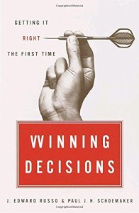

Knowledge Content Library
340
Foundations of Decision Analysis
by Ali Abbas, Ron Howard
A groundbreaking text that explores the art of decision making, both in life and in professional settings.
A groundbreaking text that explores the art of decision making, both in life and in professional settings.
continue to: amazon.com
345
Winning Decisions: Getting It Right the First Time

by J. Edward Russo and Paul Schoemaker
A comprehensive, one-of-a-kind guide to the proven methods of making critical business decisions confidently, quickly–and correctly.
A comprehensive, one-of-a-kind guide to the proven methods of making critical business decisions confidently, quickly–and correctly.
continue to: amazon.com
349
Choices, Values, and Frames
by Daniel Kahneman and Amos Tversky
Choices, Values, and Frames presents an empirical and theoretical challenge to classical utility theory, offering prospect theory as an alternative framework.
Choices, Values, and Frames presents an empirical and theoretical challenge to classical utility theory, offering prospect theory as an alternative framework.
continue to: amazon.com
347
Winning at Litigation through Decision Analysis: Creating and Executing Winning Strategies in any Litigation or Dispute
by John Celona
This book is the first in-depth guide to applying the philosophy, theory, and methods of decision analysis to creating and executing winning legal strategies.
This book is the first in-depth guide to applying the philosophy, theory, and methods of decision analysis to creating and executing winning legal strategies.
continue to: amazon.com
344
Predictably Irrational: The Hidden Forces That Shape Our Decisions
by Dan Ariely
Ariely refutes the common assumption that we behave in fundamentally rational ways. These misguided behaviors are neither random nor senseless. They're systematic and predictable—making us predictably irrational.
Ariely refutes the common assumption that we behave in fundamentally rational ways. These misguided behaviors are neither random nor senseless. They're systematic and predictable—making us predictably irrational.
continue to: amazon.com
342
How We Know What Isn't So: The Fallibility of Human Reason in Everyday Life
by Thomas Gilovich
A wise and readable guide to the fallacy of the obvious in everyday life.
A wise and readable guide to the fallacy of the obvious in everyday life.
continue to: amazon.com
343
Decision Analysis for Managers
by David Charlesworth
This book gives you the tools to... * clarify and reach alignment on goals and objectives and understand trade-offs, * develop and examine alternatives, * systematically analyze the effects of risk and uncertainty, and * maximize the chances of achieving your goals and objectives.*
This book gives you the tools to... * clarify and reach alignment on goals and objectives and understand trade-offs, * develop and examine alternatives, * systematically analyze the effects of risk and uncertainty, and * maximize the chances of achieving your goals and objectives.*
continue to: amazon.com
350
Heuristics and Biases: The Psychology of Intuitive Judgment
by Thomas Gilovich, Dale Griffin and Daniel Kahneman
This book examines how people answer questions about judgment.
This book examines how people answer questions about judgment.
continue to: amazon.com
189
Enterprise Project Portfolio Analysis
by Richard M. Bayney and Ram Chakravarti
On building competencies for R&D and IT investment success.
On building competencies for R&D and IT investment success.
continue to: amazon.com
348
The Art and Science of Negotiation
by Howard Raiffa
Raiffa emphasizes problems and situations where, with the kinds of skills he aims to develop, disputants can achieve results that are beneficial to all parties concerned.
Raiffa emphasizes problems and situations where, with the kinds of skills he aims to develop, disputants can achieve results that are beneficial to all parties concerned.
continue to: amazon.com
353
Negotiation Analysis: The Science and Art of Collaborative Decision Making
by Howard Raiffa with John Richardson and David Metcalfe
This masterly book substantially extends Howard Raiffa's earlier classic, The Art and Science of Negotiation. It does so by incorporating three additional supporting strands of inquiry: individual decision analysis, judgmental decision making, and game theory.
This masterly book substantially extends Howard Raiffa's earlier classic, The Art and Science of Negotiation. It does so by incorporating three additional supporting strands of inquiry: individual decision analysis, judgmental decision making, and game theory.
continue to: amazon.com
354
The Righteous Mind: Why Good People Are Divided by Politics and Religion
by Jonathan Haidt
As America descends deeper into polarization and paralysis, social psychologist Jonathan Haidt has done the seemingly impossible—challenged conventional thinking about morality, politics, and religion in a way that speaks to everyone on the political spectrum.
As America descends deeper into polarization and paralysis, social psychologist Jonathan Haidt has done the seemingly impossible—challenged conventional thinking about morality, politics, and religion in a way that speaks to everyone on the political spectrum.
continue to: amazon.com
352
Overcoming Organizational Defenses: Facilitating Organizational Learning
by Chris Argyris
Explains how to address various defenses to change in organizations.
Explains how to address various defenses to change in organizations.
continue to: amazon.com
351
Getting to Yes: Negotiating Agreement Without Giving In
by Roger Fisher, William L. Ury, Bruce Patton
Offers a proven, step-by-step strategy for coming to mutually acceptable agreements in every sort of conflict.
Offers a proven, step-by-step strategy for coming to mutually acceptable agreements in every sort of conflict.
continue to: amazon.com
532
Estimating Predictive Probability of Success
Shaun Comfort, Publications (Journal Article)
531
Six steps to making a Quality Decision
Steve Begg, Publications (Journal Article)